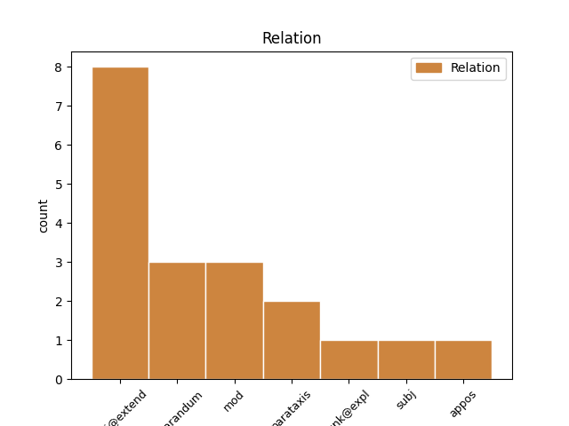
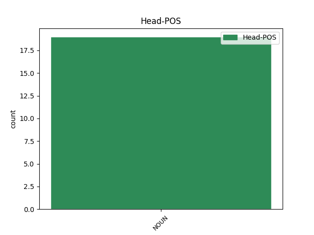
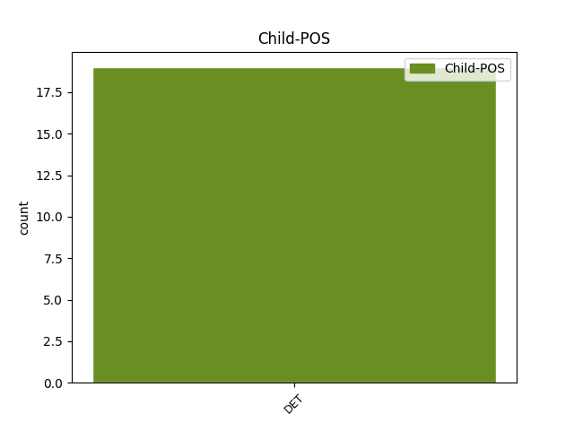

Distribution of features within this leaf



Agreement Rules sorted by frequency.
- When the dependent token is the conjunct(conj@extend) of the head token, and the head token is NOUN and the dependent token is DET.
1 kako _ _ _ _ 0 _ _ _
2 orož _ _ _ _ 0 _ _ _
3 [gap] _ _ _ _ 0 _ _ _
4 orožje orožje NOUN Ncnsa Case=Acc|Gender=Neut|Number=Sing 0 _ _ _
5 pa _ _ _ _ 0 _ _ _
6 to ta DET Pd-nsn Case=Nom|Gender=Neut|Number=Sing|PronType=Dem 4 conj@extend _ msd=Zk-sei|word=to
1 pa _ _ _ _ 0 _ _ _
2 če _ _ _ _ 0 _ _ _
3 znam _ _ _ _ 0 _ _ _
4 od _ _ _ _ 0 _ _ _
5 b _ _ _ _ 0 _ _ _
6 [gap] _ _ _ _ 0 _ _ _
7 od _ _ _ _ 0 _ _ _
8 petih _ _ _ _ 0 _ _ _
9 pogojev pogoj NOUN Ncmpg Case=Gen|Gender=Masc|Number=Plur 0 _ _ _
10 pogojenih _ _ _ _ 0 _ _ _
11 mislim _ _ _ _ 0 _ _ _
12 tistih tisti DET Pd-mpg Case=Gen|Gender=Masc|Number=Plur|PronType=Dem 9 appos _ msd=Zk-mmr|word=tistih
13 pri _ _ _ _ 0 _ _ _
14 jeziku _ _ _ _ 0 _ _ _
15 ki _ _ _ _ 0 _ _ _
16 naj _ _ _ _ 0 _ _ _
17 bi _ _ _ _ 0 _ _ _
18 jih _ _ _ _ 0 _ _ _
19 poznal _ _ _ _ 0 _ _ _
20 štiri _ _ _ _ 0 _ _ _
21 mislim _ _ _ _ 0 _ _ _
22 tri _ _ _ _ 0 _ _ _
23 je _ _ _ _ 0 _ _ _
24 dosti _ _ _ _ 0 _ _ _
25 po _ _ _ _ 0 _ _ _
26 moje _ _ _ _ 0 _ _ _
Disagree Examples:
1 srbščine srbščina NOUN Ncfsg Case=Gen|Gender=Fem|Number=Sing 0 _ _ _
2 in _ _ _ _ 0 _ _ _
3 hrvaščine _ _ _ _ 0 _ _ _
4 pa _ _ _ _ 0 _ _ _
5 še _ _ _ _ 0 _ _ _
6 [gap] _ _ _ _ 0 _ _ _
7 pa _ _ _ _ 0 _ _ _
8 cirilica _ _ _ _ 0 _ _ _
9 pa _ _ _ _ 0 _ _ _
10 to ta DET Pd-nsn Case=Nom|Gender=Neut|Number=Sing|PronType=Dem 1 conj@extend _ msd=Zk-sei|word=to
1 mislim _ _ _ _ 0 _ _ _
2 sicer _ _ _ _ 0 _ _ _
3 eem _ _ _ _ 0 _ _ _
4 okej _ _ _ _ 0 _ _ _
5 ful _ _ _ _ 0 _ _ _
6 sem _ _ _ _ 0 _ _ _
7 pogrešala _ _ _ _ 0 _ _ _
8 jaz _ _ _ _ 0 _ _ _
9 kolege kolega NOUN Ncmpa Case=Acc|Gender=Masc|Number=Plur 0 _ _ _
10 pa _ _ _ _ 0 _ _ _
11 to ta DET Pd-nsn Case=Nom|Gender=Neut|Number=Sing|PronType=Dem 9 conj@extend _ msd=Zk-sei|word=to
12 ful _ _ _ _ 0 _ _ _
1 eem _ _ _ _ 0 _ _ _
2 ker _ _ _ _ 0 _ _ _
3 pač _ _ _ _ 0 _ _ _
4 vseeno _ _ _ _ 0 _ _ _
5 okej _ _ _ _ 0 _ _ _
6 saj _ _ _ _ 0 _ _ _
7 je _ _ _ _ 0 _ _ _
8 [name:personal] _ _ _ _ 0 _ _ _
9 v _ _ _ _ 0 _ _ _
10 redu red NOUN Ncmsl Case=Loc|Gender=Masc|Number=Sing 0 _ _ _
11 pa _ _ _ _ 0 _ _ _
12 to ta DET Pd-nsn Case=Nom|Gender=Neut|Number=Sing|PronType=Dem 10 conj@extend _ msd=Zk-sei|word=to
13 ne _ _ _ _ 0 _ _ _
14 nimam _ _ _ _ 0 _ _ _
15 nič _ _ _ _ 0 _ _ _
16 čez _ _ _ _ 0 _ _ _
17 njega _ _ _ _ 0 _ _ _
18 za _ _ _ _ 0 _ _ _
19 reči _ _ _ _ 0 _ _ _
20 ampak _ _ _ _ 0 _ _ _
21 tako _ _ _ _ 0 _ _ _
22 pač _ _ _ _ 0 _ _ _
23 recimo _ _ _ _ 0 _ _ _
24 eee _ _ _ _ 0 _ _ _
25 eem _ _ _ _ 0 _ _ _
26 sem _ _ _ _ 0 _ _ _
27 ugotovila _ _ _ _ 0 _ _ _
28 da _ _ _ _ 0 _ _ _
29 vseeno _ _ _ _ 0 _ _ _
30 sem _ _ _ _ 0 _ _ _
31 jaz _ _ _ _ 0 _ _ _
32 bolj _ _ _ _ 0 _ _ _
33 tak _ _ _ _ 0 _ _ _
34 eem _ _ _ _ 0 _ _ _
35 eem _ _ _ _ 0 _ _ _
36 drugačen _ _ _ _ 0 _ _ _
37 človek _ _ _ _ 0 _ _ _
38 kot _ _ _ _ 0 _ _ _
39 on _ _ _ _ 0 _ _ _
40 [all:laughter] _ _ _ _ 0 _ _ _
41 kakorkoli _ _ _ _ 0 _ _ _
42 ne _ _ _ _ 0 _ _ _
1 ta _ _ _ _ 0 _ _ _
2 človek _ _ _ _ 0 _ _ _
3 se _ _ _ _ 0 _ _ _
4 tako _ _ _ _ 0 _ _ _
5 pisal _ _ _ _ 0 _ _ _
6 ka _ _ _ _ 0 _ _ _
7 to ta DET Pd-nsn Case=Nom|Gender=Neut|Number=Sing|PronType=Dem 8 subj _ msd=Zk-sei|word=to
8 fi fi NOUN Ncmsn Case=Nom|Gender=Masc|Number=Sing 0 _ _ _
9 ? _ _ _ _ 0 _ _ _
1 pa _ _ _ _ 0 _ _ _
2 te _ _ _ _ 0 _ _ _
3 smo _ _ _ _ 0 _ _ _
4 mi _ _ _ _ 0 _ _ _
5 to _ _ _ _ 0 _ _ _
6 ne _ _ _ _ 0 _ _ _
7 znali _ _ _ _ 0 _ _ _
8 kaj _ _ _ _ 0 _ _ _
9 to ta DET Pd-nsn Case=Nom|Gender=Neut|Number=Sing|PronType=Dem 10 unk@expl _ msd=Zk-sei|word=tov
10 ginazium ginazium NOUN Ncmsn Case=Nom|Gender=Masc|Number=Sing 0 _ _ _
11 ka _ _ _ _ 0 _ _ _
12 v _ _ _ _ 0 _ _ _
13 gimnazium _ _ _ _ 0 _ _ _
14 hodi _ _ _ _ 0 _ _ _
15 pa _ _ _ _ 0 _ _ _
16 te _ _ _ _ 0 _ _ _
17 smo _ _ _ _ 0 _ _ _
18 to _ _ _ _ 0 _ _ _
19 dolgo _ _ _ _ 0 _ _ _
20 ne _ _ _ _ 0 _ _ _
21 znali _ _ _ _ 0 _ _ _
22 te _ _ _ _ 0 _ _ _
23 oča _ _ _ _ 0 _ _ _
24 so _ _ _ _ 0 _ _ _
25 gučali _ _ _ _ 0 _ _ _
26 ka _ _ _ _ 0 _ _ _
27 naša _ _ _ _ 0 _ _ _
28 [name:personal] _ _ _ _ 0 _ _ _
29 v _ _ _ _ 0 _ _ _
30 nazium _ _ _ _ 0 _ _ _
31 hodi _ _ _ _ 0 _ _ _
32 gimnazium _ _ _ _ 0 _ _ _
33 tako _ _ _ _ 0 _ _ _
34 ka _ _ _ _ 0 _ _ _
35 sem _ _ _ _ 0 _ _ _
36 jih _ _ _ _ 0 _ _ _
37 poznal _ _ _ _ 0 _ _ _